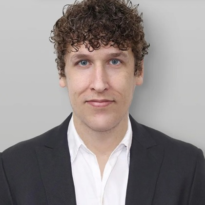

За заявку отвечает не один человек
Разные части заявки требуют разной экспертизы, поэтому со студентом работает несколько специалистов — каждый в своей зоне.
Ментор по стратегии
Задаёт направление заявки: список университетов, приоритеты, таймлайн. Проводит регулярные индивидуальные встречи и подключает свою академическую сеть.
Ментор по эссе
Ведёт мотивационное и дополнительные эссе от первых заметок до финальной версии — через несколько итераций правок, без шаблонов.
Научный наставник
Сопровождает исследовательский проект в Research Institute: постановка вопроса, работа с данными, подготовка к публикации.
Преподаватель SAT / AP
Отвечает за балл теста: 12 занятий в месяц на предмет, разбор ошибок, пробные экзамены и бесплатные prep-сессии перед датой.
Ассистент программы
Даёт подробную обратную связь по каждому письменному заданию — чтобы студент понимал не только оценку, но и как именно улучшить текст.
Admissions-консультант
Отвечает за техническую часть: CommonApp, CSS Profile, финансовые документы, дедлайны и комплектность заявки.
Люди, которые с этим работают

Valera Arakelyan
Выпускник Yale-NUS, Grand Strategy Program в Yale. За два года помог студентам получить стипендии более чем на $4 000 000.

Dr. Lyusyena Kirakosyan
Senior Project Associate в Virginia Tech Institute for Policy and Governance. Ведёт занятия, research-проекты и личные встречи со студентами.

Tyler Hallett
Post-graduate курс Creative Nonfiction в UCLA. Студенты поступали в MIT, Harvard, Yale, Stanford, UPenn, Brown, Duke, Cornell, UChicago.

Sanjar Umar
Учится в Babson на полной стипендии. Отвечает за Creative Writing и admissions-консультирование, распределение менторов и логистику программ.

Sega Arakelyan
История и Arts & Humanities, курс Harvard по визуальному сторителлингу. Руководит департаментом консультаций, ведёт десятки заявок.
Nigel Li
MA Georgetown, BA MGIMO. Пишет для The Diplomat и South China Morning Post, был research fellow в CTBTO.